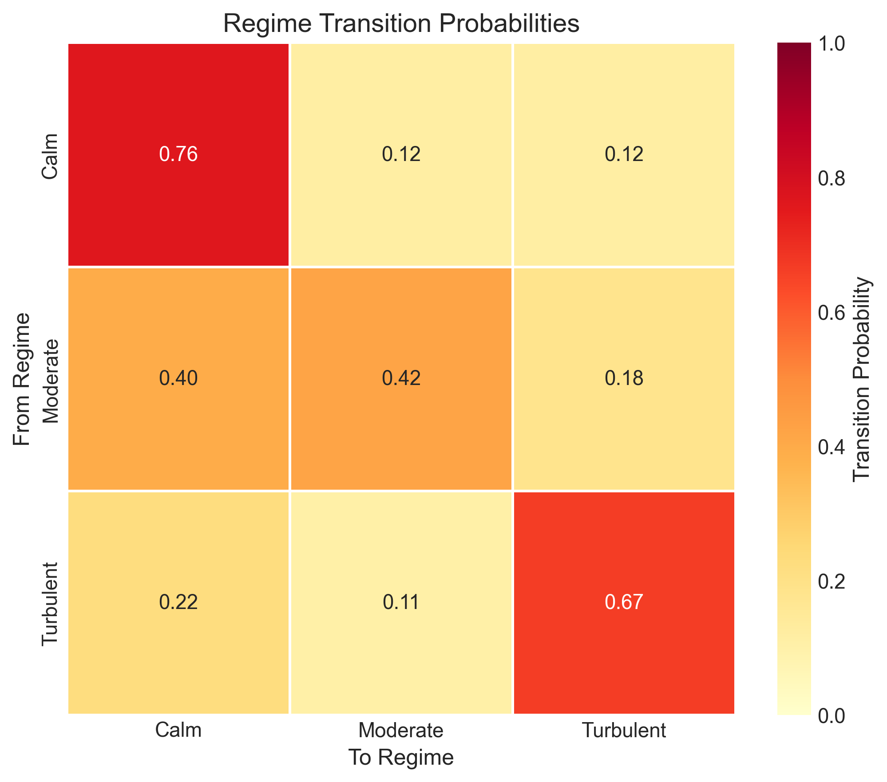
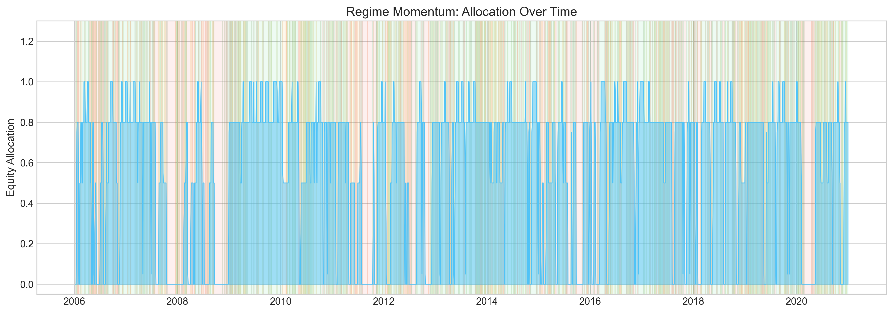
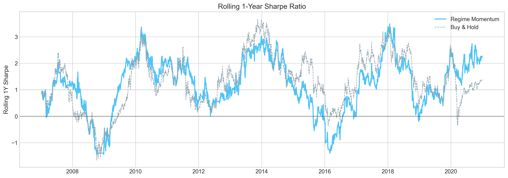
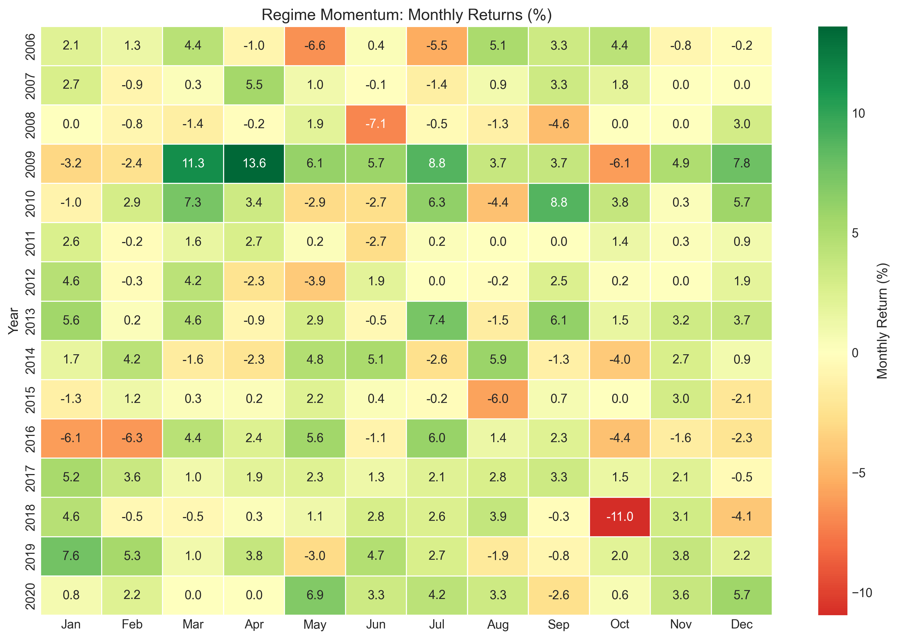
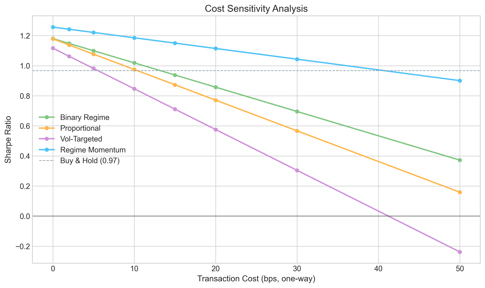
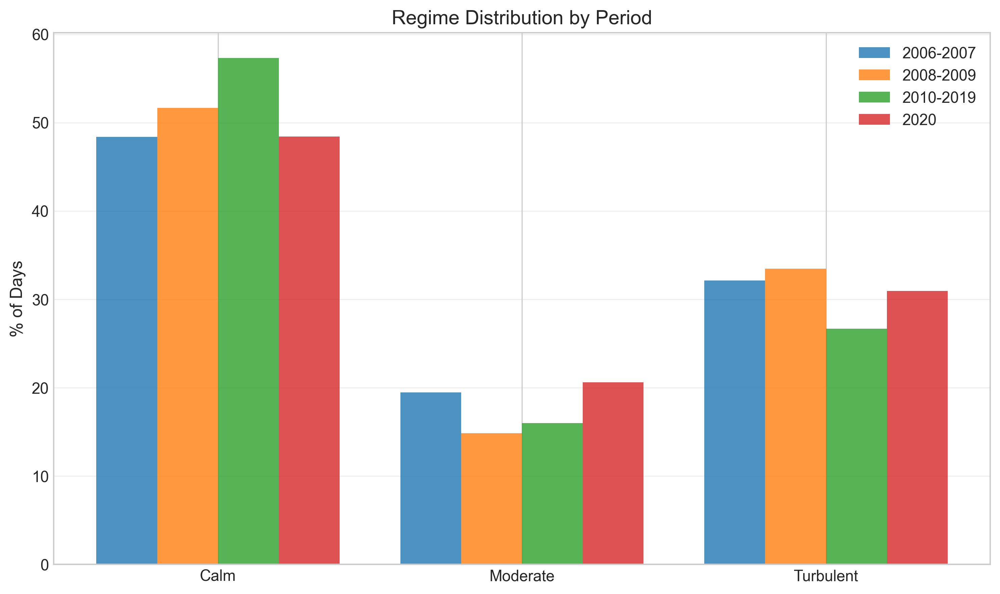

Research Question
Can statistical regime detection models produce actionable allocation signals for systematic equity trading that survive realistic transaction costs and outperform static benchmarks on a risk-adjusted basis?
This project combines three unsupervised learning approaches — Hidden Markov Models, GARCH conditional volatility, and K-Means clustering — into an ensemble that classifies each trading day as Calm, Moderate, or Turbulent. These classifications drive allocation signals that reduce equity exposure during high-risk periods.
Methodology
Data: 190 NASDAQ-listed stocks, daily OHLCV data from 2000 to 2020. Cross-sectional features computed: market volatility, breadth, direction, correlation, ATR, and volume.
Models: Walk-forward validation with expanding window (5-year minimum training). Quarterly refit. 59 out-of-sample windows producing 3,771 strictly out-of-sample predictions (2006–2020). No model ever sees future data.
Strategies: Four variants tested — binary regime switching, proportional allocation, volatility-targeted, and regime momentum. All signals include a 3-day confirmation filter, rate limiter, and 1-day execution lag.
Regime Detection
The ensemble classifies 55% of days as Calm, 17% as Moderate, and 29% as Turbulent. Regimes are highly persistent — the transition matrix shows >90% self-transition probability for calm markets.


Strategy Design
The best-performing strategy (Regime Momentum) increases allocation when calm regimes persist and reduces exposure during regime transitions. The signal goes fully defensive (0% equity) only in confirmed turbulent regimes.


Performance


Performance Comparison
| Strategy | CAGR | Vol | Sharpe | Sortino | Max DD | Turnover |
|---|---|---|---|---|---|---|
| Regime Momentum | 16.0% | 13.0% | 1.05 | 1.38 | -22.4% | 9.2x |
| Buy & Hold | 24.5% | 23.5% | 0.97 | 1.23 | -54.6% | 0.0x |
| Binary Regime | 13.3% | 12.4% | 0.91 | 1.22 | -26.0% | 20.0x |
| Proportional | 10.2% | 9.8% | 0.83 | 1.09 | -20.4% | 20.0x |
| Vol-Targeted | 4.5% | 4.9% | 0.52 | 0.66 | -9.2% | 13.2x |
Regime Momentum has the highest risk-adjusted return (Sharpe 1.05) while cutting max drawdown by more than half relative to buy-and-hold. Bootstrap 95% confidence interval for Sharpe: [0.74, 1.68] — statistically significant.
Rolling Performance


Cost Sensitivity

The breakeven cost analysis is the most practically relevant output. Institutional equity transaction costs are typically 5–10 bps. All strategy variants survive at these levels with substantial margin.
Where Does Alpha Come From?

64% of total return is generated during Calm regimes, despite calm days representing only 55% of the sample. The strategy's edge comes from correctly identifying and overweighting calm periods, not from timing turbulent exits.
Model Diagnostics


Limitations
Survivorship bias: The 190-ticker universe is selected from currently listed stocks. Delisted companies (66 tickers) are excluded, which may overstate returns.
Equal-weight market return: The backtest uses an equal-weight cross-sectional return as the market proxy, not a capitalization-weighted index. Results may differ with SPY or QQQ.
No 60/40 or risk parity benchmarks: TLT data starts in 2002, limiting the multi-asset benchmark comparison to a shorter period. Only buy-and-hold is compared over the full out-of-sample window.
Transaction cost model: The cost model uses fixed bps per trade. Real-world costs vary by trade size, market impact, and urgency. The breakeven analysis provides a buffer.
Out-of-sample period: 2006–2020 includes one major bull market (2009–2020) and two crises (2008, COVID). Performance in other market structures is unknown.